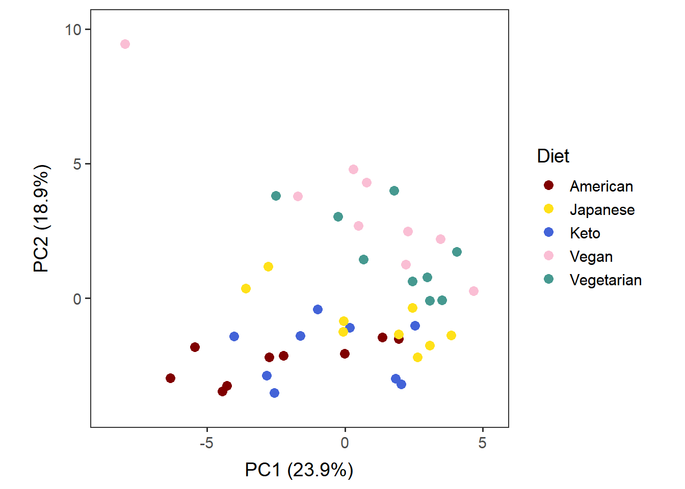

Name the path to DietR directory where input files are pulled.
main_wd <- "~/GitHub/DietR"Load the necessary functions.
source("lib/specify_data_dir.R")
source("lib/ggplot2themes.R")
source("lib/PCA.R")Call color palette.
distinct100colors <- readRDS("lib/distinct100colors.rda")You can come back to the main directory by:
setwd(main_wd)Specify the directory where the data is.
SpecifyDataDirectory(directory.name= "eg_data/VVKAJ/PCA_Nut_asis")Load the PCA result.
pcares <- read.table("VVKAJ_Nut_asis_PCs.txt", sep="\t", header=T) head(pcares, 1)## UserName User_Day RecallNo FoodAmt KCAL PROT TFAT CARB
## 1 VVKAJ101 VVKAJ101_1 1 2402.5 2314.904 80.1572 82.97721 337.7973
## MOIS ALC CAFF THEO SUGR FIBE CALC IRON MAGN PHOS
## 1 1879.619 0 26.784 0 144.2085 52.6255 889.8455 31.282 589.3865 1787.454
## POTA SODI ZINC COPP SELE VC VB1 VB2 NIAC
## 1 4615.4 2298.662 11.77651 1.935984 113.9153 209.0321 1.88248 2.971306 18.72793
## VB6 FOLA FA FF FDFE VB12 VARA RET BCAR
## 1 3.829823 719.366 179.92 539.446 846.246 5.17202 1261.667 673.185 7004.547
## ACAR CRYP LYCO LZ ATOC VK CHOLE SFAT S040
## 1 106.7165 56.118 13.35 14273.58 9.85131 674.6513 375.967 18.69606 0.310902
## S060 S080 S100 S120 S140 S160 S180 MFAT
## 1 0.110651 0.117603 0.230345 0.186061 1.246759 11.44833 4.13006 28.14091
## M161 M181 M201 M221 PFAT P182 P183 P184 P204
## 1 0.739316 26.99568 0.234965 0.00881 28.95861 25.20147 3.52587 0 0.157937
## P205 P225 P226 VITD CHOLN VITE_ADD B12_ADD F_TOTAL F_CITMLB
## 1 0.00444 0 0.03441 4.8812 572.5637 0 3.016 4.037445 0.65995
## F_OTHER F_JUICE V_TOTAL V_DRKGR V_REDOR_TOTAL V_REDOR_TOMATO V_REDOR_OTHER
## 1 3.035495 0.342 3.656365 1.66584 0 0 0
## V_STARCHY_TOTAL V_STARCHY_POTATO V_STARCHY_OTHER V_OTHER V_LEGUMES G_TOTAL
## 1 0 0 0 1.990525 1.25675 5.4384
## G_WHOLE G_REFINED PF_TOTAL PF_MPS_TOTAL PF_MEAT PF_CUREDMEAT PF_ORGAN
## 1 2.652 2.7864 3.1117 0 0 0 0
## PF_POULT PF_SEAFD_HI PF_SEAFD_LOW PF_EGGS PF_SOY PF_NUTSDS PF_LEGUMES D_TOTAL
## 1 0 0 0 1.8093 0 1.3024 4.93515 1.34064
## D_MILK D_YOGURT D_CHEESE OILS SOLID_FATS ADD_SUGARS A_DRINKS Diet
## 1 0.21168 0 0.5544 46.7644 14.58214 12.53787 0 Vegetarian
## Gender Age Weight Height BMI Waist.Circumference PC1 PC2
## 1 M 31 79 186 22.83501 80 -2.506979 3.801124
## PC3 PC4 PC5 PC6 PC7 PC8 PC9
## 1 -1.112932 2.117251 -0.8028802 1.628301 -0.933243 -1.631662 -1.383225
## PC10 PC11 PC12 PC13 PC14 PC15 PC16
## 1 -2.268471 1.440631 -0.6917592 -0.1237768 -0.9738011 0.9557002 0.7104411
## PC17 PC18 PC19 PC20 PC21 PC22 PC23
## 1 -0.6245066 0.06879199 -0.07303093 -0.2947434 -0.219926 -0.6815151 0.1786243
## PC24 PC25 PC26 PC27 PC28 PC29 PC30
## 1 -0.3216528 -0.3928484 0.003035873 -0.2611029 -0.2457898 0.2495502 -0.2383485
## PC31 PC32 PC33 PC34 PC35 PC36 PC37
## 1 0.09025686 0.01393207 0.0470552 0.02868685 0.01036442 0.01410383 -0.04490929
## PC38 PC39
## 1 -0.01689953 -0.003124576PCA results contains the input (UserNames, nutrients, food categories), metadata (Diet, Gender etc.), and corresponding PC axis values.
Load the variance explained by each PC.
PC_var_exp <- read.table("VVKAJ_Nut_asis_PC_var_explained.txt", sep="\t", header=T) head(PC_var_exp)## PC var_explained
## 1 1 0.23894
## 2 2 0.18934
## 3 3 0.12672
## 4 4 0.06910
## 5 5 0.05897
## 6 6 0.05209Generate a PC1 x PC2 plot with the users colored by their diets.
PC12_diet <- ggplot2::ggplot(pcares, aes(x=PC1, y=PC2, color=Diet, fill=Diet)) +
geom_point(size=3) +
no_grid + space_axes +
scale_fill_manual( values = distinct100colors) +
scale_color_manual(values = distinct100colors) +
scale_x_continuous(expand = expansion(mult=c(0.1, 0.1))) + # give some space on the lower and the upper limits of X.
scale_y_continuous(expand = expansion(mult=c(0.1, 0.1))) + # give some space on the lower and the upper limits of Y.
labs(x = paste("PC1 (", round(PC_var_exp[1,2]*100, 1), "%)", sep=""),
y = paste("PC2 (", round(PC_var_exp[2,2]*100, 1), "%)", sep="")) +
theme(aspect.ratio = 1) PC12_diet
Save as a .pdf.
ggsave("VVKAJ_Nut_asis_PC12_diet.pdf", PC12_diet,
device="pdf", width=7, height=6.5)Similar charts can be generated using the PCA results of Nut_ave, Cat_asis, and Cat_ave by loading their PCA output.
Come back to the main directory before you start running another script.
setwd(main_wd)